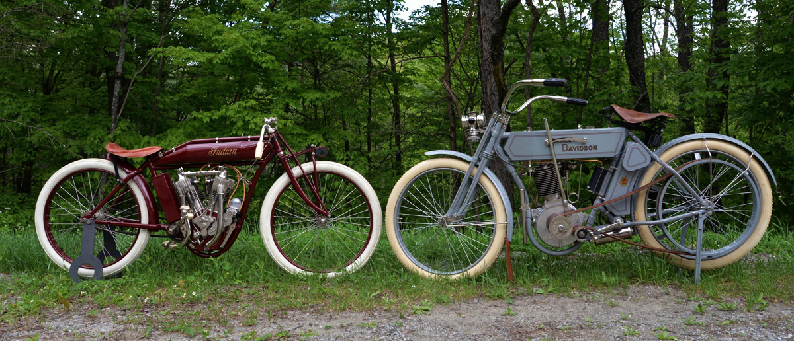
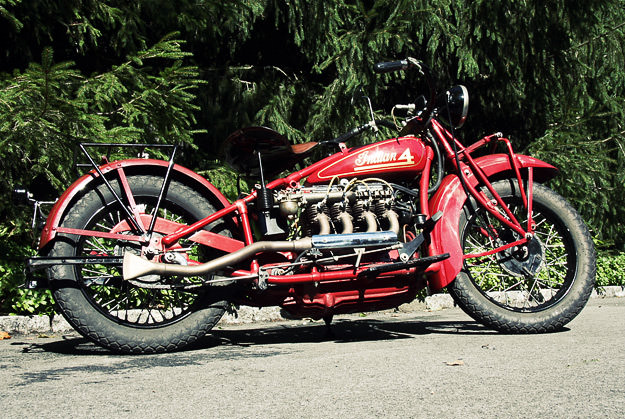

1910s to 1930s
From the 1910s to the 1930s, motorcycles evolved rapidly from motorized bicycles into sophisticated machines. In the 1910s, manufacturers like Harley-Davidson, Indian, and Triumph began producing more purpose-built motorcycles, and World War I accelerated their development, with bikes like the Indian Powerplus and Harley-Davidson Model J serving in military roles. The 1920s saw a civilian boom in motorcycle use, with improved comfort, multi-speed gearboxes, electric lighting, and better suspension systems. Harley-Davidson and Indian dominated the U.S. market, while British brands like BSA and Norton gained popularity in Europe. Racing also became more influential, pushing technical innovations. In the 1930s, despite the economic challenges of the Great Depression, motorcycle design embraced more stylish, streamlined aesthetics influenced by Art Deco. Technological advancements continued, including more powerful engines, better braking systems, and innovations like BMW’s telescopic front forks on the R12. Iconic models such as the Harley-Davidson Knucklehead and Velocette KTT emerged, solidifying the motorcycle’s place in both transportation and sport.
 